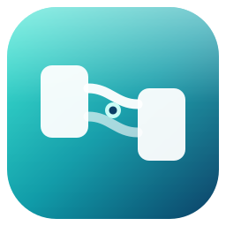

Necta
远程桌面
被控端未运行
本机 ID
---------
让对方在主控端输入这串数字
复制
临时密码
------
换一个
每次会话随机生成，用完即弃；不注册账号、不上传画面。
被别人连接时，本机会弹窗要求你点「允许」。
最近设备
远程连接
对方 ID
密码
连接
连别人装好被控端的机器；只装一边也能用——你只做主控端就不用装。
共享我的 Nexus 桌面
别人用浏览器打开链接，就能看到
你这个桌面
的实时状态并跟着操作。 不传像素，只同步窗口状态，几 KB/s。
生成共享链接
加入别人的共享
本机画面自测
用浏览器捕获本机屏幕，先确认画面链路、码率和控制中心都正常（输入注入要等被控端 agent）。
捕获本机屏幕
未连接
—
ms
—
fps
—
结束
等待画面…
控制中心
连接中断 · 正在重连（第 1 次）